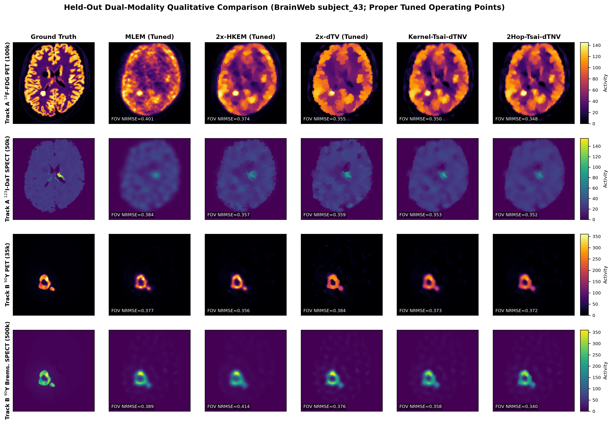
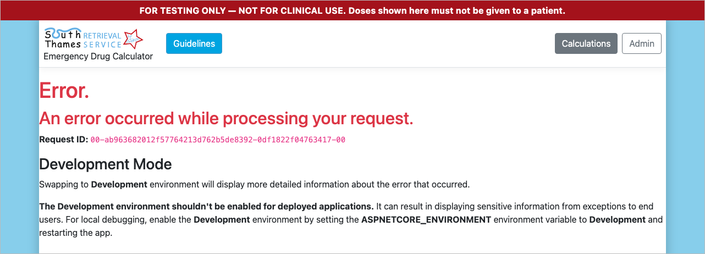

Exhibit 2 // Weekend Project
AutoSeg vs MELD Find & nnU-Net v2


50-epoch 3-fold parity benchmarkClick to zoom
- The problem: Decoupling nnU-Net v2 into clean PyTorch + MONAI (like
meld_find) has been painful for years. - Built in a weekend: Native PyTorch Lightning + MONAI library with 548 passing equivalence tests and zero
nnunetv2runtime dependency. - Matched upstream & MELD: 0.889 vs 0.892 Dice on Hippocampus; 0.870 vs 0.879 on HeartSmall.
- AI found an upstream bug:
nnUNetDataLoader.get_bboxmisses an upper-bound clamp near volume borders. We had to addreproduce_upstream_bbox_bug=Truejust to prove parity.
Exhibit 3 // Context is the Superpower
My PhD unified in 48 hours (thanks to 4 years of context)



2Hop-Tsai-dTNV PET/SPECT campaignClick to zoom
- What it ran: 14 comparator families across diagnostic PET/SPECT and 90Y glioblastoma theranostics.
- Results: Exact monotonic
FISTA-DPsolver (0.84% error in 6.7s) and false-lesion hallucination cut from 14.05% → 3.89%. - Why it worked: Not clever prompting — I gave it 4 years of curated notes, equations, and failure modes I built by hand.
Takeaway: Great context turns AI into a superpower. Without context, you get v1 of this website.
Clinical Case Study
Geoff's STRS App: >40,000 lines of regulated C#


Caught by adversarial AI probes, missed by 396 unit testsClick to zoom
- The achievement: A working >40k-line Class I paediatric retrieval app with 396 passing unit tests (160 backend, 236 frontend).
- What doesn't scale: Humans reading 40,000 lines of Claude-generated C# in a PR, or asking Geoff to rewrite all his docs into our QMS template by hand.
- What worked: Pointing adversarial AI probes at the compiled app uncovered 23 real defects — e.g. Alice's Aciclovir staying on Bob's printed bedside sheet (
B09) and infant age truncation (B01). - The better way: Use AI under our supervision to build adversarial tests, spot gaps, and format his docs into our QMS template for review.